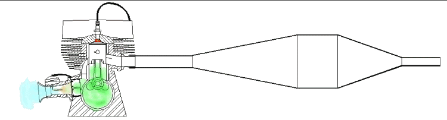

Таков принцип работы двигателя внетреннего сгорания

Двухтактный и четырех тактный двигатель,и конечно же роторный,не имеющий коленчатого вала.В наш век конечно
...все скоро измениться,например на электротягу,которая и экологичней и кпд побольше.Но тем не менее пока без
этих придуманных человечеством двигателей-никуда.Все кругом едет,шумит,пилит,везет,сверлит,бурит...итд.